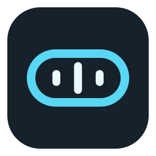

Your music. Under control.
See the track and artwork, skip a song or pause without leaving the game. Scroll over the player to adjust your music volume.
Works with compatible Windows media players, including Yandex Music.
GlimHUDYour music, your performance, your style. One transparent panel that keeps you in the game.
STAY IN YOUR FLOW
Keep the useful things close, and let the rest fade into the background.
See the track and artwork, skip a song or pause without leaving the game. Scroll over the player to adjust your music volume.
Works with compatible Windows media players, including Yandex Music.Presented FPS, CPU and GPU load, temperatures and memory. Add live download and upload rates, with session totals and a 60-second graph in Settings.
Choose one network adapter; its traffic includes other apps and LAN transfers. Network display is off by default. FPS and sensor availability depend on your setup.Show the panel automatically while a game is active, hide the music player entirely, or make the overlay click-through. Position it with alignment guides.
Designed for windowed and borderless games.QUIET OR COLORFUL. YOUR CALL.
Keep it subtle or light it up. Rainbow Wave and Neon Flow bring color around and beneath the panel, with an optional response to your music.
Glow is optional and off by default. The preview is an animation; in the app, music response follows the selected player’s audio level.
NO NEED TO REACH FOR THE MOUSE
Global shortcuts work even when the panel is locked or hidden. Music volume changes only the selected application.
See all shortcuts in the README ↗Get GlimHUD for Windows. Pick the installer for a regular setup, or keep it portable.
REQUIREMENTSWindows 10 version 2004 or later / Windows 11 · x64. Self-contained downloads include the .NET runtime.
SIGNING STATUSThe installer is currently unsigned. Windows may show a security or SmartScreen warning. Download only from this project’s GitHub Releases.
BUILT IN THE OPEN
GlimHUD is free software under the MIT license. The source, development and support live on GitHub.